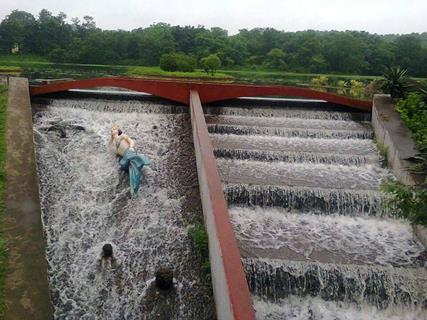
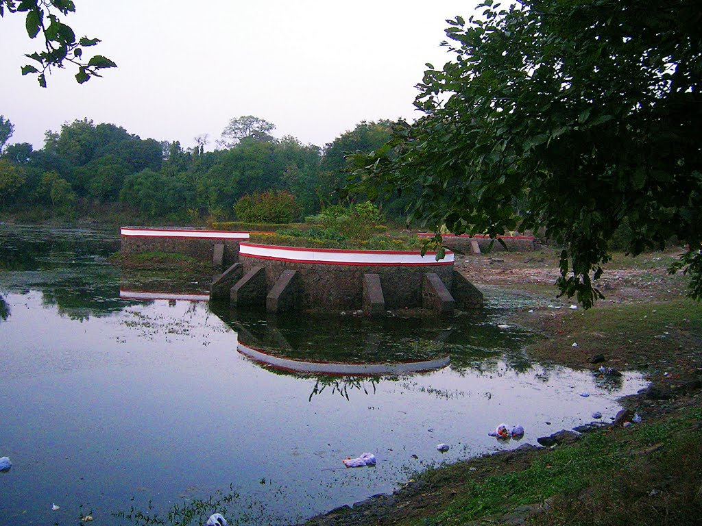

1 / 3

2 / 3

3 / 3

Description
Jabalpur is a beautiful city of central India, surrounded by natural landscapes, hills, rivers and water bodies. The name is derived from Arabic word, “JABAL” which mean boulders. It is located in the Narmada Valley and is well connected by road, (NH-7). Also it is a major railway station in central India for railways.
Location
alpari lake, Jabalpur is situated at Jabalpur in India. It is located at MPSEB Colony, Rampur, Jabalpur, Madhya Pradesh
Local Time & Weather
Current local time at Jabalpur is 11:47 PM. Current temprature is 27.86 with Minimum temprature 22.18 and Maximun temprature is 29.33. light rain with humidity 74% and Wind speed of 3.95 mph (Measured at Jabalpur).